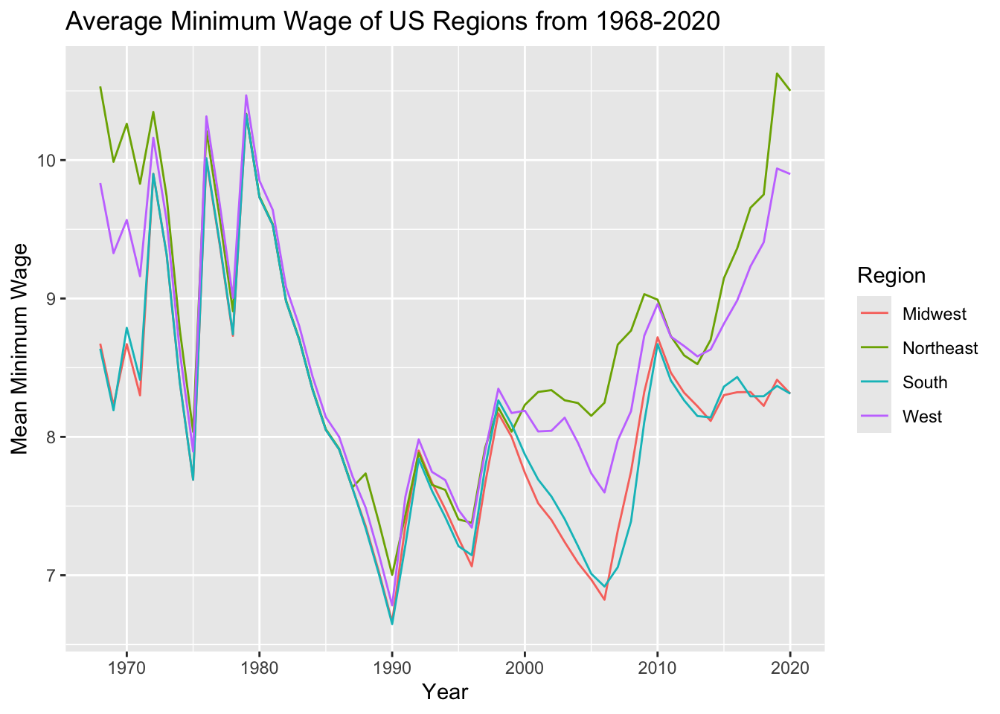
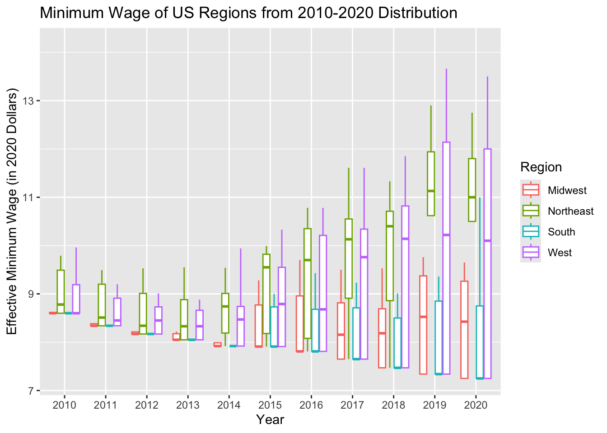

The dataset analyzed is the collection of data from 1968 until 2020 about wages at different government levels in the United States of America. The important values for this analysis will focus on Year, State, Effective.Minimum.Wage.2020.Dollars, and Region (added in next step). We will use these variables to investigate the trend of minimum wage between different areas of the U.S. throughout the years.
Regions
The United States Census Bureau divides the United States into four regions. Based on that information, We will be looking at the regional grouping of the Northeast, the Midwest, the South, and the West for the states to find how minimum wage differ by region.
#Code to add regional groupsregion_list <- min_wage |>distinct(State)write.csv(region_list, "./region_list.csv")
#Code to add new Region variable to data frameenriched_region_list <-read_csv("region_list1.txt", show_col_types =FALSE)
#Code to merge data setsenriched_min_wage <-full_join(min_wage,enriched_region_list)
Joining with `by = join_by(State)`
Summary Statistics
As our investigation starts, we are creating tables of summary statistics to find the growth and variance of the minimum wage in periods of years. First, we will look at the trend of the regions from 2010 to 2020.
# A tibble: 5 × 3
Region mean_effective_wage var_effective_wage
<chr> <dbl> <dbl>
1 West 9.47 1.88
2 Other 9.32 0.954
3 Northeast 9.71 0.878
4 South 8.98 0.648
5 Midwest 8.97 0.624
These summaries will help us understand how differently varied the mean of minimum wage used to be during the 70s compared to the 2010s.
Visualization
As our investigation continues we will analyze visualizations of the trend of mean minimum wage by regions throughout the years. This clearly shows the changes between regions’ minimum wage in the U.S.
enriched_min_wage|>filter(Region !="Other")|>group_by(Region, Year)|>summarise(mean_effective_wage =mean(Effective.Minimum.Wage.2020.Dollars))|>ggplot(aes(x=Year, y=mean_effective_wage, color=Region))+geom_line()+labs(x="Year", y="Mean Minimum Wage", title="Average Minimum Wage of US Regions from 1968-2020")
`summarise()` has grouped output by 'Region'. You can override using the
`.groups` argument.

And, another trend of distribution of minimum wage by region in the last 10 years of data (2010-2020). This clearly shows changes in distributions of minimum wage and its variance by regions of the U.S.
enriched_min_wage|>filter(Region !="Other", Year >2009)|>ggplot(aes(x=factor(Year), y=Effective.Minimum.Wage.2020.Dollars, color=factor(Region)))+geom_boxplot(outlier.shape =NA)+labs(x="Year", y="Effective Minimum Wage (in 2020 Dollars)", title="Minimum Wage of US Regions from 2010-2020 Distribution")+guides(color =guide_legend(title ="Region"))

Analysis:
As we compare the minimum wage between regions, I came up with some interesting insights.
From the summary tables we found that in the recent years of 2010 to 2020 the mean of minimum wage is slightly lower than it was in the years 1968 to 1980, with the Northeast region having the highest minimum wage. As well as, that in the West region there was always a high variety of minimum wages throughout the years and the other regions of the South and Northeast have also adapted a high variety of minimum wages, but in the 1970s they used to have low variety.
From the visualization of the line plot, we found that from about 1975 until 2000 the mean of minimum wages in each region was very similar to one another as shown in the graph. But, from 1968 to about 1975 and from about 2000 to 2020 there was a dramatic change in average minimum wage as the South and Midwest regions have the lowest wages, then the West region, and lastly the Northeast region had a very big growth with the highest wages. From the visualization of the box-plot, we found that from 2010 to 2020 there was a large and clear change in the distribution of the minimum wages between the states in each region. Throughout the years, the distribution of minimum wages became more and more varied, with the West region having the largest range and every other region have larger ranges than its previous year.